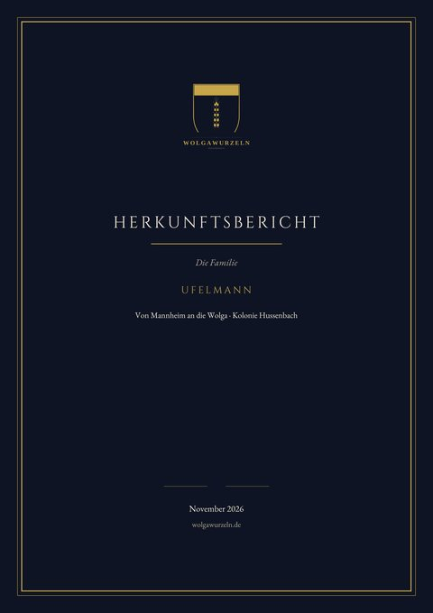
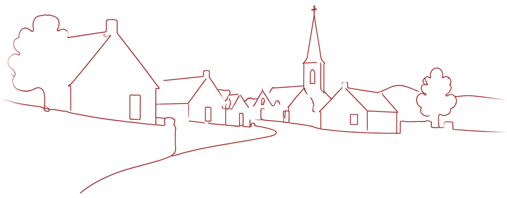
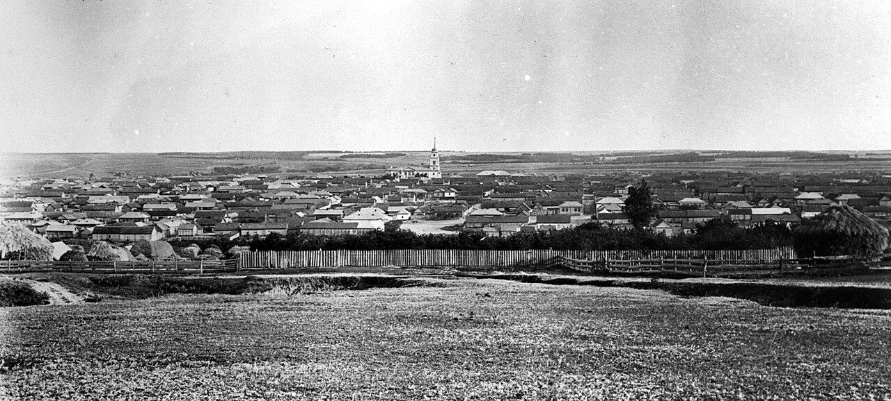
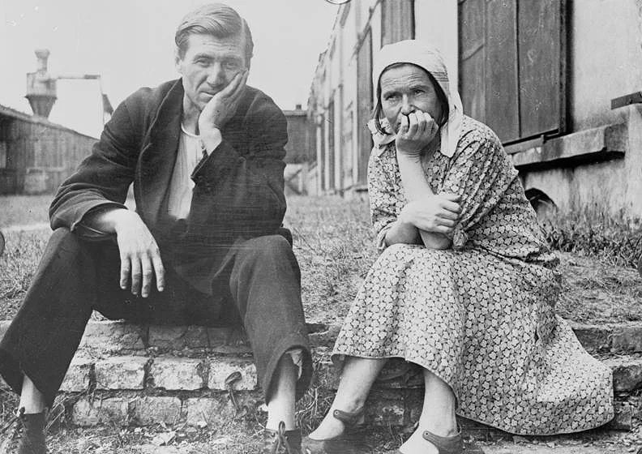
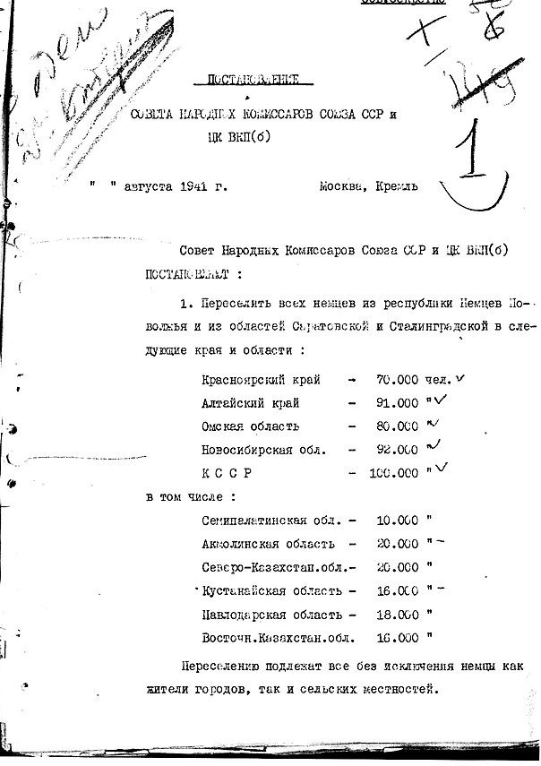
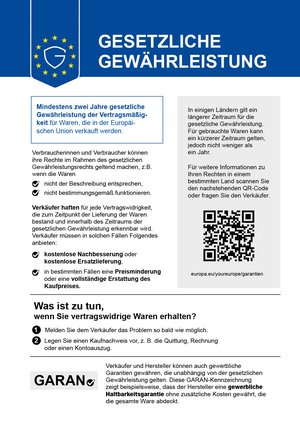

1 Nachname
Herkunftsbericht
Kolonie, Herkunft und Weg der Familie, mit Quellen.
49 €einmalig
PDF in 3 bis 5 Tagen
Vom einzelnen Nachnamen bis zur Akte im Archiv. Jede Leistung beginnt mit einer kostenlosen Ersteinschätzung.
Kostenlose ErsteinschätzungOder eine Frage stellen
Sie suchen bestimmte Vorfahren mit Namen und Daten? Zur Einzelfallrecherche
1 Nachname
Kolonie, Herkunft und Weg der Familie, mit Quellen.
49 €einmalig
PDF in 3 bis 5 Tagen
Bis zu 4 NachnamenHäufigste Wahl
Jede Linie einzeln, mit Karte und Zeitleiste.
89 €einmalig
PDF in 5 bis 8 Tagen
Vorfahren
Vorfahren mit Namen und Daten, auch vor Ort.
149 €für 3 Stunden mit Bericht
jede weitere 50 € nach Freigabe
Archive in Russland
Kirchenbücher, Revisionslisten und Strafakten, die nicht online liegen.
Festpreisnach Sichtung
Dauer hängt vom Archiv ab
Alte Schrift
Kurrent, Sütterlin und russische Schreibschrift, Zeile für Zeile.
Angebotnach Sichtung der Scans

Herkunftsbericht und Familiengeschichte auch als gedrucktes Fotobuch, ideal als Geschenk: plus 29 €. Mehr dazu
Gedruckt in Deutschland
Rechtzeitig zu Weihnachten. Bei Bestellung bis zum 1. Advent (29. November) kommt das Fotobuch innerhalb Deutschlands vor Weihnachten an.
Alle Honorare sind Endpreise, gemäß § 19 UStG wird keine Umsatzsteuer berechnet. Die Rechnung erhalten Sie zusammen mit dem fertigen Bericht. Bezahlen können Sie per Überweisung, PayPal oder Karte.
49 €PDF in 3 bis 5 Tagen
Für einen Nachnamen: woher er stammt, in welcher Kolonie er zuhause war und welchen Weg die Familie genommen hat. Der Bericht ordnet den Namen einer Kolonie an der Wolga, am Schwarzen Meer oder in Wolhynien zu, erzählt die Geschichte dieser Kolonie von der Gründung bis zur Deportation und führt die Linie bis in die Gegenwart.
Aus dem Beispiel Ufelmann, Kolonie Hussenbach. Zum Vergrößern antippen.


89 €PDF in 5 bis 8 Tagen
Recherche für bis zu vier Nachnamen, in der Regel die Linien der vier Großeltern. Jede Linie wird einzeln untersucht: aus welcher Kolonie sie stammt, woher sie ursprünglich aus Deutschland kam und welchen Weg sie nahm. Zusammen ergibt sich, wie sich Ihre Familie zusammensetzt, aus welchen Kolonien und Regionen die Linien kamen und welchen Weg die Familie nahm, von der Ansiedlung über Deportation und Arbeitsarmee bis heute.
Ganzes Beispiel als PDFENVorher eine Frage stellen
Beide Beispiele zeigen echte Nachnamen, Kolonien und Quellen, jede Angabe mit Fundstelle. Ihr Text ist für die Beispiele geschrieben, Angaben zu einzelnen Familien ab 1900 sind nicht enthalten. Mehr als vier Nachnamen werden als individuelle Recherche zusammengestellt, den Rahmen erfahren Sie vorher.
Aus dem Beispiel Ross, Zitterkopf und Schlegel. Zum Vergrößern antippen.

149 € für 3 Stundenjede weitere 50 €
Wenn Sie nicht nur die Kolonie wissen wollen, sondern konkrete Vorfahren suchen: einen Taufeintrag, den Herkunftsort in Deutschland, den Weg einer Familie nach 1941. Dafür wird in Kirchenbüchern, Revisionslisten und Akten recherchiert, wo nötig auch mit Anfragen an Archive in Deutschland.
Der Einstieg umfasst drei Stunden Recherche einschließlich eines schriftlichen Berichts, für eine klar umrissene Frage. Er kostet 149 €. Reicht das nicht aus, geht es nur nach Ihrer Freigabe weiter, zu 50 € je weitere Stunde.
Gebühren der Archive. Gebühren deutscher Archive für Kopien und Scans kommen nach Beleg dazu. Anfragen an Archive in Russland laufen als eigene Archivanfrage mit Festpreis vorab.
Recherche vor Ort. Nicht alles liegt online vor oder lässt sich per Anfrage klären. Dann wird vor Ort in Archiven und Bibliotheken recherchiert.
So sieht ein Recherchebericht aus. Am Ende steht ein Bericht: was geprüft wurde, mit welchem Ergebnis, jede Quelle mit Fundstelle, und welcher nächste Schritt sich lohnt. Das Beispiel prüft einen vorhandenen Stammbaum der Familie Magel, aus deren Erforschung Wolgawurzeln entstanden ist, von der Deportation 1941 zurück bis nach Düdelsheim in Hessen. Die Jahre ab 1941 und die jüngeren Generationen sind darin weggelassen. Ein Begräbniseintrag von 1720 zeigt, wie eine Abschrift im Bericht aussieht.
Ersteinschätzung zur EinzelfallrechercheDirekt beauftragen, 149 €Ganzes Beispiel als PDFEN
Aus dem Recherchebericht Magel. Zum Vergrößern antippen.

Was eine Archivanfrage zutage bringen kann. Wurde ein Vorfahr in der Sowjetunion verhaftet, gibt es über ihn eine Strafakte. Darin liegt oft ein Foto, das nach der Verhaftung aufgenommen wurde. Für viele Familien ist es das einzige Bild, das von diesem Menschen erhalten ist. Wurde er rehabilitiert, wie die meisten Verfolgten, haben Angehörige das Recht, die Akte einzusehen und Kopien zu erhalten. Die Anfrage beim zuständigen Archiv in Russland übernehmen wir als Archivanfrage zum Festpreis.
Festpreis nach Sichtung
Für Einträge und Akten, die nicht online liegen: Kirchenbücher, Revisionslisten und Strafakten in Archiven in Russland. Die Anfrage stellen Kontaktpersonen vor Ort, Sie erhalten eine Kopie des Originals mit Fundstelle. Oft ergibt sich die Frage aus einer Einzelfallrecherche oder einer Familiengeschichte, sie lässt sich aber auch direkt stellen.
Auf diesem Weg sucht Wolgawurzeln auch nach Urkunden für einen Antrag als Spätaussiedler. Ausgestellt und beglaubigt werden sie vom Archiv, nicht von Wolgawurzeln. Sie können bei einem Antrag helfen, eine Zusage sind sie nicht. Wolgawurzeln berät nicht rechtlich, über den Antrag entscheidet das Bundesverwaltungsamt.
Festpreis vorab. Nach Sichtung Ihrer Angaben erfahren Sie, welche Bücher oder Akten in Frage kommen und was die Anfrage kostet, einschließlich der Gebühren des Archivs. Bezahlt wird die Anfrage, nicht der Fund: Ist ein Eintrag nicht erhalten, fallen die Kosten trotzdem an.
Dauer. Wie lange eine Antwort dauert, hängt vom Archiv ab. Über Kontaktpersonen vor Ort geht es oft schneller als auf dem üblichen Weg, einen festen Termin kann trotzdem niemand zusagen. Über den Stand werden Sie laufend informiert.

Preis nach Sichtung der Scans
Briefe, Urkunden und Kopien aus Kirchenbüchern, in deutscher Kurrentschrift, Sütterlin oder russischer Schreibschrift. Der Text wird Zeile für Zeile übertragen, dazu kommt eine Lesehilfe in heutigem Deutsch, mit aufgelösten Abkürzungen und gekennzeichneten unsicheren Stellen. Das Honorar steht fest, sobald die Scans gesichtet sind.

d. 3. Augst: Joh: Conrad Mertz Orga=nist allhier 28. jahr alt christl:beerdiget word[en]. dd.
Am 3. August 1720 wurde Johann Conrad Mertz, Organist hier in Altenhaßlau, 28 Jahre alt, christlich beerdigt.
Das Jahr steht im Seitenkopf. „Augst:“ kürzt Augusti ab, „christl:“ christlich, „word.“ worden. Eckige Klammern ergänzen abgekürzte Buchstaben, das Gleichheitszeichen am Zeilenende ist der Trennstrich der Zeit. Das Kürzel „dd.“ schließt viele Einträge dieser Seite ab, seine Bedeutung lässt sich aus der Seite allein nicht klären und wird im Bericht als offen geführt.
Kirchenbuch Altenhaßlau, reformiert, 1653 bis 1771, Bild 1269. Landeskirchliches Archiv der Evangelischen Kirche von Kurhessen-Waldeck, Kirchenkreis Gelnhausen, über Archion.
Bezahlen können Sie per Überweisung, per PayPal oder sofort online mit Karte. Für Überweisung und PayPal genügt eine Bestellung per Mail oder eine Anfrage über das Formular, Sie erhalten dann die Zahlungsdaten. Die Rechnung kommt zusammen mit dem fertigen Bericht. Gibt eine beauftragte Recherche weniger her als zugesagt, wird anteilig erstattet.
Auch als gedrucktes Fotobuch. Herkunftsbericht und Familiengeschichte gibt es zusätzlich als gedrucktes Fotobuch für 29 €, Versand innerhalb Deutschlands inklusive, ins Ausland auf Anfrage. Ideal als Geschenk: Auf Wunsch wird der Bericht auf den Namen der beschenkten Person ausgestellt. Das Fotobuch können Sie gleich bei der Bestellung dazunehmen oder später, wenn Sie den Bericht als PDF gesehen haben.
Gedruckt in Deutschland
Rechtzeitig zu Weihnachten. Bei Bestellung bis zum 1. Advent (29. November) kommt das Fotobuch innerhalb Deutschlands vor Weihnachten an.

Ihre Angaben werden nur für Ihre Recherche verwendet. Veröffentlicht wird nichts ohne Ihre ausdrückliche Zustimmung.
Anfragen auf Deutsch, Russisch oder Englisch. Berichte auf Deutsch, auf Wunsch auf Russisch oder Englisch.